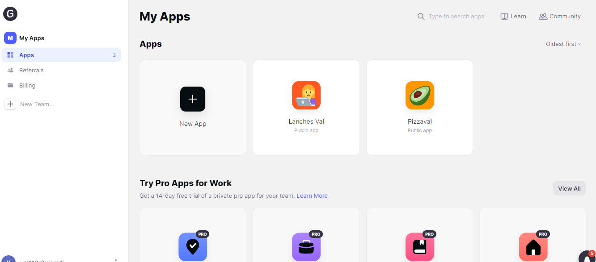
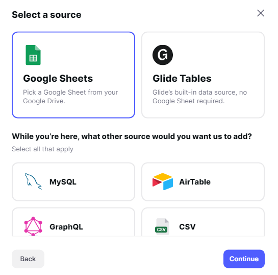
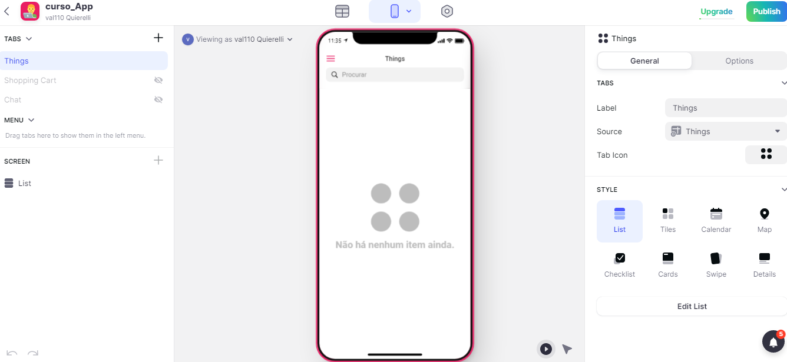
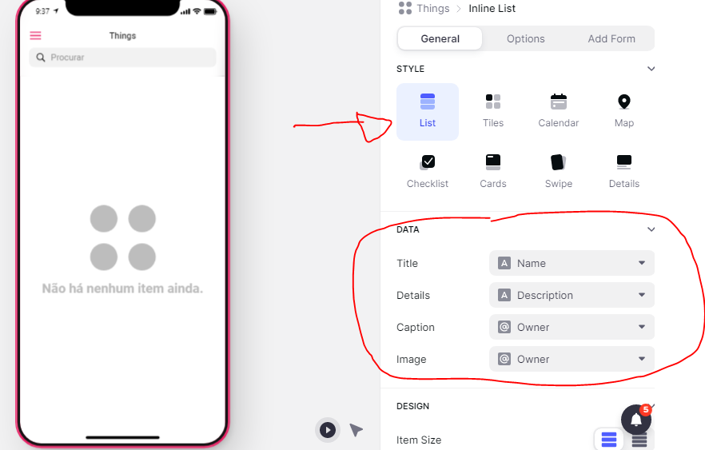
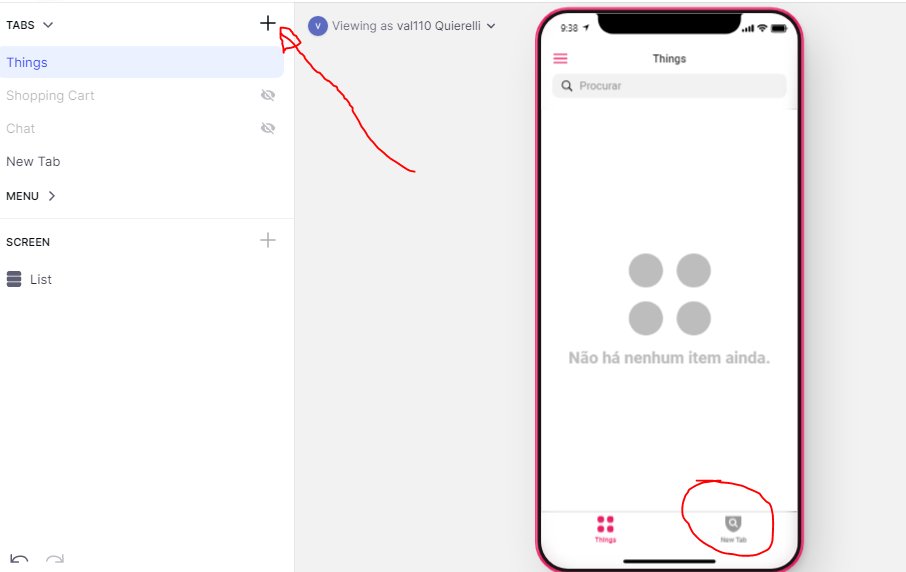
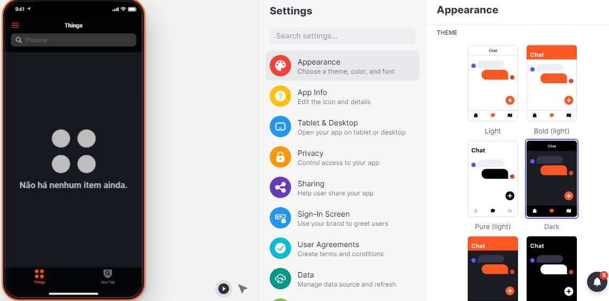

Aula 3- Conhecendo o Glide.
Nesta aula vamos conhecer um pouco mais do Glide. Entre com sua conta do Google como visto na aula passada e vamos conhecer melhor essa ferramenta que nos ajudará a criar nossos aplicativos.
Ao entrar no Glide vemos a seguinte tela:

Clique na opção New App.
Depois escolha o nome e o dispositivo no caso Fone, no meu caso vou colocar nome curso_App.

Na próxima tela ele sugere que usemos o Google planilhas que usaremos mais tarde nesse momento escolha o Glide Tables.

Feito isso ele cria nosso primeiro aplicativo:

Ao lado direito temos diversas opções para criar listas, títulos e outros tipos de aplicativos, em cada uma delas podemos também alterar suas configurações.

No botão ao lado de TABS podemos acrescentar mais tabs no nosoo aplicativo veja a imagem:

Para mudar as cores do nosso aplicativo clique em Setings e veja que temos muitas opções:

Bom agora que conhecemos o Glide vamos criar um aplicativo com ele na próxima aula.